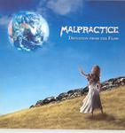

| Artist: | Malpractice |
| Title: | Deviation From The Flow |
| Label: | Spinefarm Records SP1239CD |
| Length(s): | 50 minutes |
| Year(s) of release: | 2005 |
| Month of review: | [03/2006] |
| 1) | Assembly Line | 5.48 |
| 2) | Colours In Between | 4.50 |
| 3) | The Industry | 4.25 |
| 4) | The Long Run | 7.19 |
| 5) | Divided | 5.51 |
| 6) | Expedition | 5.57 |
| 7) | Circles In The Sand | 6.15 |
| 8) | Fragile Pages | 9.36 |
Divided is the first track that does some real melodic development in the intro. Unfortunately this melody is drowned out as soon as the vocals start, dragging the track back in line. Fragile Pages has an acoustic intro suggesting a degree of subtlety, but once again the vocals wash this away easily.
Although I would say Malpractice manage just a tad more variety in their material than Enchant does in theirs, the majority of critical points for Enchant hold for Malpractice as well. Songs are to similar to eachother, difference lay in details. The drums can be on the straight side, smacking away in the just-not-far-enough-back for what they have to say. I guess these compositions are just a little less intricate than those with Enchant, which doesn't help considering the lack of variation.